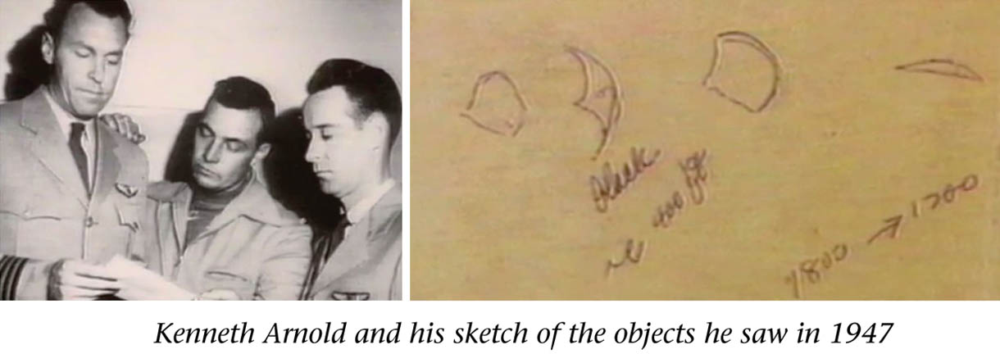

Kenneth Arnold saw UFOs over WA the same night many people in WA saw orb

(image source : http://thelivingsky.com/the-sky-is-alive/ )
Introduction
- This is new to me. - Kenneth Arnold saw the UFOs over Mount Rainier in Washington, WA at 15:00.Quotation
The Purple Blobs Among the most neglected of all the soft sightings are the strange purple blobs, some so faint that they can barely be seen with the naked eye. Such blobs were frequently reported in earlier days of the saucer scare, but newspapers were soon diverted by the more intriguing hard sightings of seemingly solid disks. The purple blobs have been busy throughout the world, but the published sightings have become increasingly rare. People who see these things often dismiss them as some kind of illusion or natural phenomenon, or they feel they are not worthy of being reported. Between 9:15 and 11:00 P.M. on the night of June 24, 1947, scores of people in Seattle, Washington, watched peculiar purple and light-blue spots of light dancing around the skies. That was the same day that Kenneth Arnold saw his famous flying saucers.John Keel, "Operation Trojan Horse", p.56.My view 1
- After a quick check, I found a similar reference on Wikipedia(*1).Other Seattle area newspapers also reported other sightings of flashing, rapidly moving unknown objects on the same day, but not the same time, as Arnold's sighting. Most of these sightings were over Seattle or west of Seattle in the town of Bremerton, either that morning or at night.[17]My view 2
- This data supports my following conjecture. The UFOs sighted by Kenneth Arnold was probably a natural phenomenon. Here's why. - In other words, the mechanism is as follows. - The site has many fault zones, and on the day of the event, crustal pressure increased, causing an EMF anomaly → orb swarms(*1)
Kenneth Arnold UFO sighting - Wikipedia - https://en.wikipedia.org/wiki/Kenneth_Arnold_UFO_sighting (2022-08-16)▼Click to expand
The Kenneth Arnold UFO sighting occurred on June 24, 1947, when private pilot Kenneth Arnold claimed that he saw a string of nine, shiny unidentified flying objects flying past Mount Rainier at speeds that Arnold estimated at a minimum of 1,200 miles an hour (1,932 km/hr). This was the first post-World War II sighting in the United States that garnered nationwide news coverage and is credited with being the first of the modern era of UFO sightings, including numerous reported sightings over the next two to three weeks. Arnold's description of the objects also led to the press quickly coining the terms flying saucer and flying disc as popular descriptive terms for UFOs. Sighting[edit] Locations of Arnold's plane and the sighted objects The objects arrived from the direction of Mount Baker, then passed in front of Mount Rainier and Mount Adams in the space of 1 min. 42 s. The 47 mi (76 km) distance, if measured peak to peak, suggests a speed of 1,650 mph (2,660 km/h), similar to Arnold's estimate of 1,700 mph (2,700 km/h), which far exceeds that of the record-holding P-80 jets of the time. On June 24, 1947, Arnold was flying from Chehalis, Washington, to Yakima, Washington, in a CallAir A-2 on a business trip. He made a brief detour after learning of a $5,000 reward (equivalent to $61,000 today) for the discovery of a U.S. Marine Corps C-46 transport airplane that had crashed near Mount Rainier.[1] The skies were completely clear and there was a mild wind.[2] A few minutes before 3:00 p.m. (15:00) at about 9,200 feet (2,800 m) in altitude and near Mineral, Washington, he gave up his search and started heading eastward towards Yakima. He saw a bright flashing light, similar to sunlight reflecting from a mirror. Afraid he might be dangerously close to another aircraft, Arnold scanned the skies around him, but all he could see was a DC-4 to his left and behind him, about 15 miles (24 km) away.[2] About 30 seconds after seeing the first flash of light, Arnold saw a series of bright flashes in the distance off to his left, or north of Mount Rainier, which was then from 20 to 25 miles (32 to 40 km) away. He thought they might be reflections on his airplane's windows, but a few quick tests (rocking his airplane from side to side, removing his eyeglasses, later rolling down his side window) ruled this out. The reflections came from flying objects. They flew in a long chain, and Arnold for a moment considered they might be a flock of geese, but quickly ruled this out for a number of reasons, including the altitude, bright glint, and obviously very fast speed. He then thought they might be a new type of jet and started looking intently for a tail and was surprised that he couldn't find any.[1] They quickly approached Rainier and then passed in front, usually appearing dark in profile against the bright white snowfield covering Rainier, but occasionally still giving off bright light flashes as they flipped around erratically. Sometimes he said he could see them on edge when they seemed so thin and flat they were practically invisible. According to Jerome Clark,[3][4] Arnold described them as a series of objects with convex shapes, though he later revealed that one object differed by being crescent-shaped. Several years later, Arnold would state he likened their movement to saucers skipping on water, without comparing their actual shapes to saucers,[5] but initial quotes from him do indeed have him comparing the shape to a "saucer", "disc", "pie pan", or "half moon", or generally convex and thin.[2] Using a Dzus cowling fastener as a gauge to compare the nine objects to the distant DC-4, Arnold estimated their angular size as slightly smaller than the DC-4, about the width between the outer engines (about 60 ft (18 m)). Arnold also said he realized that the objects would have to be quite large to see any details at that distance and later, after comparing notes with a United Airlines crew that had a similar sighting 10 days later (see below), placed the absolute size as larger than a DC-4 airliner (or greater than 100 feet (30 m) in length). Army Air Force analysts would later estimate 140 to 280 feet (85 m), based on analysis of human visual acuity and other sighting details (such as estimated distance).[6] Arnold said the objects were grouped together, as Ted Bloecher[7] writes, "in a diagonally stepped-down, echelon formation, stretched out over a distance that he later calculated to be five miles". Though they were moving on a more or less level horizontal plane, Arnold said the objects weaved from side to side ("like the tail of a Chinese kite" as he later stated), darting through the valleys and around the smaller mountain peaks. They would occasionally flip or bank on their edges in unison as they turned or maneuvered causing almost blindingly bright or mirror-like flashes of light. The encounter gave him an "eerie feeling", but Arnold suspected he had seen test flights of a new U.S. military aircraft.[2] As the objects passed Mt Rainer, Arnold turned his plane southward on a more or less parallel course. It was at this point that he opened his side window and began observing the objects unobstructed by any glass that might have produced reflections. According to Arnold, the objects did not disappear and continued to move very rapidly southward, continuously moving forward of his position. Curious about their speed, he began to time their rate of passage: he said they moved from Mount Rainer to Mount Adams where they faded from view, a distance of about 50 miles (80 km), in one minute and forty-two seconds, according to the clock on his instrument panel. When he later had time to do the calculation, the speed was over 1,700 miles per hour (2,700 km/h). This was about three times faster than any manned aircraft in 1947. Not knowing exactly the distance where the objects faded from view, Arnold conservatively and arbitrarily rounded this down to 1,200 miles (1,900 km) an hour, still faster than any known aircraft, which had yet to break the sound barrier. Arnold shares the story[edit] When Arnold landed in Yakima, he described what he had seen to a number of pilot friends, who suggested that maybe he had seen guided missiles or a new airplane being secretly developed by the United States Army.[8] After refueling, he continued on his way to an air show in Pendleton, Oregon.[2] He was first interviewed by reporters the next day (June 25), when he went to the office of the East Oregonian in Pendleton.[9] Any skepticism the reporters might have harbored evaporated when they interviewed Arnold at length;[10] as historian Mike Dash records:[11] Arnold had the makings of a reliable witness. He was a respected businessman and experienced pilot ... and seemed to be neither exaggerating what he had seen, nor adding sensational details to his report. He also gave the impression of being a careful observer ... These details impressed the newspapermen who interviewed him and lent credibility to his report. Speaking to a reporter for the Associated Press, Arnold said: "This whole thing has gotten out of hand. I want to talk to the FBI or someone. Half the people look at me as a combination of Einstein, Flash Gordon and screwball. I wonder what my wife back in Idaho thinks."[12] Corroboration[edit] Eight Arnold-like objects photographed over Tulsa, Oklahoma, July 12, 1947 (from Tulsa Daily World) The Portland Oregon Journal reported on July 4 receiving a letter from an L. G. Bernier of Richland, Washington (about 110 miles (180 km) east of Mount Adams and 140 miles (230 km) southeast of Mount Rainier). Bernier wrote that he saw three of the strange objects over Richland flying "almost edgewise" toward Mount Rainier about one half-hour before Arnold. Bernier thought the three were part of a larger formation. He indicated they were traveling at high speed: "I have seen a P-38 appear seemingly on one horizon and then gone to the opposite horizon in no time at all, but these disks certainly were traveling faster than any P-38. [Maximum speed of a P-38 was about 440 miles an hour.] No doubt Mr. Arnold saw them just a few minutes or seconds later, according to their speed."[13] The previous day, Bernier had also spoken to his local newspaper, the Richland Washington Villager, and was among the first witnesses to suggest extraterrestrial origins: "I believe it may be a visitor from another planet."[14] About 60 miles (97 km) west-northwest of Richland in Yakima, Washington, a woman named Ethel Wheelhouse likewise reported sighting several flying discs moving at fantastic speeds at around the same time as Arnold's sighting.[15] When military intelligence began investigating Arnold's sighting in early July (see below), they found yet another witness from the area. A member of the Washington State forest service, who had been on fire watch at a tower in Diamond Gap, about 20 miles (32 km) south of Yakima, reported seeing "flashes" at 3:00 p.m. on the 24th over Mount Rainier (or exactly the same time as Arnold's sighting), that appeared to move in a straight line. Similarly, at 3:00 p.m. Sidney B. Gallagher in Washington state (exact position unspecified) reported seeing nine shiny discs flash by to the north.[16] Other Seattle area newspapers also reported other sightings of flashing, rapidly moving unknown objects on the same day, but not the same time, as Arnold's sighting. Most of these sightings were over Seattle or west of Seattle in the town of Bremerton, either that morning or at night.[17] The primary corroborative sighting, however, occurred ten days later (July 4) when a United Airlines crew over Idaho en route to Seattle also spotted five to nine disk-like objects that paced their plane for 10 to 15 minutes before suddenly disappearing.[18] Arnold talks of possible non-earthly origins[edit] On July 7, 1947, two stories came out where Arnold raised the topic of possible extraterrestrial origins, both as his opinion and those who had written to him. In an Associated Press story, Arnold said he had received quantities of fan mail eager to help solve the mystery, none of it calling him a "screwball". Many of the writers, like a doomsday preacher Arnold spoke of, placed a religious interpretation on his sighting. But others, he said, "suggested the discs were visitations from another planet." Arnold added he had purchased a movie camera, which he would now take with him on every flight, hoping to obtain photographic proof of what he had seen.[19] In the other story, Arnold was interviewed by the Chicago Times: "...Kenneth Luis Arnold ...is not so certain that the strange contraptions are made on this planet. Arnold... said he hoped the devices were really the work of the U.S. Army. But he told the TIMES in a phone conversation: 'If our government knows anything about these devices, the people should be told at once. A lot of people out here are very much disturbed. Some think these things may be from another planet. But they aren't harming anyone and I think it would be the wrong thing to shoot one of them down—even if can be done. Their high speed would completely wreck them…' "Arnold, in pointing to the possibility of these discs being from another world, said, regardless of their origin, they apparently were traveling to some reachable destination. Whoever controlled them, he said, obviously wasn't trying to hurt anyone. …He said discs were making turns so abruptly in rounding peaks that it would have been impossible for human pilots inside to have survived the pressure. So, he too thinks they are controlled from elsewhere, regardless of whether it's from Mars, Venus, or our own planet."[20] In an Associated Press story from July 19, Arnold reiterated his belief that if they weren't Army, then they were extraterrestrial: "The ex-University of Minnesota swimmer and footballer says he now believes: 1. The disks are not from any foreign country. 2. The Army could give the answer if it would – 'if they don't have the explanation now they certainly could do something to find out.' 3. If the Army has no explanation the disks must be – 'and I know this sounds crazy' – from another planet."[21] In April 1949, in a skeptical article in the Saturday Evening Post titled "What You Can Believe About Flying Saucers", Arnold was likewise quoted: "Since my first observations and report of the so-called 'flying disks' I have spent a great deal of money and time thoroughly investigating the subject... There is no doubt in my mind but what these objects are aircraft of a strange design, and material that is unknown to the civilization of this earth."[22] In 1950, broadcaster Edward R. Murrow interviewed Arnold, who stated that since June 1947 he had had three additional sightings of nine spacecraft.[2] Publicity and origins of term "flying saucer"[edit] Arnold's account was first featured in a few late newspaper editions on June 25, appeared in numerous U.S. and Canadian papers (and some foreign newspapers) on June 26 and thereafter, often on the front page. Without exception, according to Bloecher, the Arnold story was initially related with a serious, even-handed tone. The first reporters to interview Arnold were Nolan Skiff and Bill Bequette of the East Oregonian in Pendleton, Oregon on June 25, and the first story on the Arnold sighting, written by Bequette, appeared in the newspaper the same day.[23] The term appears[edit] Starting June 26 and June 27, newspapers first began using the terms "flying saucer" and "flying disk" (or "disc") to describe the sighted objects. Thus the Arnold sighting is credited with giving rise to these popular terms. The actual origin of the terms is somewhat controversial and complicated. Jerome Clark cites a 1970 study by Herbert Strentz, who reviewed U.S. newspaper accounts of the Arnold UFO sighting, and concluded that the term was probably due to an editor or headline writer: the body of the early Arnold news stories did not use the term "flying saucer" or "flying disc."[24] However, earlier stories did in fact credit Arnold with using terms such as "saucer", "disk", and "pie-pan" in describing the shape. (see quotations further below) Bequette interview[edit] Years later, Arnold claimed he told Bill Bequette that "they flew erratic, like a saucer if you skip it across the water." Arnold felt that he had been misquoted since the description referred to the objects' motion rather than their shape.[5] Thus Bequette has often been credited with first using "flying saucer" and supposedly misquoting Arnold, but the term does not appear in Bequette's early articles. Instead, his first article of June 25 says only, "He said he sighted nine saucer-like aircraft flying in formation..."[25] The next day in a much more detailed article, Bequette wrote, "He clung to his story of shiny, flat objects racing over the Cascade mountains with a peculiar weaving motion 'like the tail of a Chinese kite.' ...He also described the objects as 'saucer-like' and their motion 'like fish flipping in the sun.' ...[Arnold] described the objects as 'flat like a pie-pan and somewhat bat-shaped'."[26] It wasn't until June 28 that Bequette first used the term "flying disc" (but not "flying saucer"). A review of early newspaper stories indicates that immediately after his sighting, Arnold generally described the objects' shape as thin and flat, rounded in the front but chopped in the back and coming to a point, i.e., more or less saucer- or disk-like. He also specifically used terms like "saucer" or "saucer-like", "disk", and "pie pan" or "pie plate" in describing the shape. The motion he generally described as weaving like the tail of a kite and erratic flipping. For example, in a surviving recorded radio interview from June 26, 1947, made by reporter Ted Smith, United Press correspondent in Pendleton, and aired on KWRC, the local radio station of Pendleton,[27] Arnold described them as looking "something like a pie plate that was cut in half with a sort of a convex triangle in the rear." His motion descriptions were: "I noticed to the left of me a chain which looked to me like the tail of a Chinese kite, kind of weaving... they seemed to flip and flash in the sun, just like a mirror... they seemed to kind of weave in and out right above the mountaintops..." UFO related audio clips Kenneth Arnold's report to Army Air Forces (AAF) intelligence, dated July 12, 1947, which includes annotated sketches of the typical craft in the chain of nine objects Widespread UFO reports after Arnold sighting[edit] In the weeks that followed Arnold's June 1947 story, at least several hundred reports of similar sightings flooded in from the U.S. and around the world—most of which described saucer-shaped objects.[28] A sighting by a United Airlines crew of another nine disk-like objects over Idaho on July 4 probably garnered more newspaper coverage than Arnold's original sighting and opened the floodgates of media coverage in the days to follow. The most famous UFO event during this period was the Roswell UFO incident, the alleged military recovery of a crashed flying disk, the story of which broke on July 8, 1947. To calm rising public concern, this and other cases were debunked by the military in succeeding days as mistaken sightings of weather balloons.[29] Just before the Roswell story came out, the Army Air Forces in Washington issued a press statement saying they had the matter under investigation and had decided the flying discs definitely were not "secret bacteriological weapons designed by some foreign power", "new-type army rockets", or "space ships".[30] The first investigation of Arnold's claims came from Lt. Frank Brown and Capt. William Davidson of Hamilton Field in California, who interviewed Arnold on July 12. Arnold also submitted a written report at that time. Regarding the reliability of Arnold's sighting, they concluded: "It is the present opinion of the interviewer that Mr. Arnold actually saw what he stated he saw. It is difficult to believe that a man of [his] character and apparent integrity would state that he saw objects and write up a report to the extent that he did if he did not see them."[31] Others were less impressed. First Lt. Hal L. Eustace of the Army Air Corps, in a declassified July 1947 intelligence report, said that Arnold "seems to be reasonably well balanced, although excitable", describing Arnold's report as a case of "silly season episodes".[1] The Army Air Force's formal public conclusion was that "the objects of this sighting were due to a mirage."[1] On July 9, AAF intelligence, with help from the FBI, secretly began an investigation of the best sightings, mostly from pilots and military personnel. Arnold's sighting, as well as that of the United Airline's crew, were included in the list of best sightings. Three weeks later they came to the conclusion that the saucer reports were not imaginary or adequately explained by natural phenomena; something real was flying around. This laid the groundwork for another intelligence estimate in September 1947 by Gen. Nathan Twining, commanding officer of the Air Materiel Command, which likewise concluded the saucers were real and urged a formal investigation by multiple government agencies. This in turn resulted in the formation of Project Sign at the end of 1947, the first publicly acknowledged USAF UFO investigation. Project Sign eventually evolved into Project Grudge, and then the better known Project Blue Book. The personnel of the U.S. Air Force's Project Sign (1947–1949) also later studied Arnold's story. According to Major Edward J. Ruppelt, I found that there was a lot of speculation on this report [amongst Sign personnel]. Two factions ... joined up behind two lines of reasoning. One side said that Arnold had seen plain, everyday jet airplanes flying in formation ... The other side didn't buy this idea at all. They based their argument on the fact that Arnold knew where the objects were when he timed them ... There was an old theory that maybe Arnold had seen wind whipping snow along the mountain ridges, so I asked Air Force investigators about this. I got a flat "Impossible."[32] Skeptical explanations[edit] In a story published in The Minneapolis Star two days after the sighting, officials at McChord Army Air Field, about 75 air miles from the mid-point of the peaks of Mount Rainier and Mount Adams, "theorized that the only planes coming near the description are the fast P-80s."[33] The officials at McChord added that March Field, California was the closest airfield with P-80s based on it. March Field was about 600 air miles (about an hour's journey in a P-80) from the midpoint of the peaks of Mount Rainier and Mount Adams.[34] The commander of the White Sands Proving Ground in New Mexico, Lieutenant Colonel Harry R. Turner, also told reporters that Arnold's sighting was consistent with the appearance of jet airplanes.[35] When police officers and others in Portland, Oregon reported "flying disks" on the Fourth of July, Army officials responded "by pointing out that 24 P-80 fighters and six bombers flew over the city about the time the 'discs' were reported."[36] Steuart Campbell has said that the objects Arnold reported could have been mirages of several snow-capped peaks in the Cascade Range. Campbell's calculation of the objects' speed determined that they were travelling at roughly the same speed as Arnold's plane, indicating that the objects were in fact stationary. Mirages could have been caused by temperature inversions over several deep valleys in the line of sight.[37] Philip J. Klass[38] cited an article by Keay Davidson of the San Francisco Examiner in arguing that Arnold might have misidentified meteors on June 24, 1947. James Easton[39] was the first of several skeptics to suggest that Arnold may have misidentified pelicans: the birds live in the Washington region, are rather large (wingspans of over 9.8 ft (3 m) are not uncommon), have a pale underside that can reflect light, can fly at rather high altitudes, and can appear to have a somewhat crescent-shaped profile when flying. Donald Menzel's explanations[edit] Donald Menzel was a Harvard astronomer and one of the earliest UFO debunkers. Over the years, he offered several possible explanations for Arnold's 1947 UFO sighting.[40] In 1953, Menzel suggested that Arnold had seen clouds of snow blown from the mountains south of Mount Rainier. In 1963, Menzel proposed that Arnold had seen orographic clouds or wave clouds. In 1971, Menzel said that Arnold may have merely seen spots of water on his airplane's windows.
Thanks
Translated with www.DeepL.com/Translator
(2022-09-28 translate)
First published article (Japanese)
John Keel : 1947-06-24, WA 上空で Kenneth Arnold が UFO 群を目撃した当夜、WA で大勢が orb を目撃 (2022-08-16)
- 傍証というには弱いが、Randy Cramer や Tony Rodrigues の事例を見ると、彼らの SSP 体験の記憶が脳の MRI スキャンをトリガーとして事後に生成された可能性が高いと思える。
- 例の火星や小惑星セレスの SSP に参加し 20年の時間を遡って地球に戻ってきたという Randy Cramer と Tony Rodrigues がそれらの体験を想起した切っ掛けは脳の MRI スキャンだった。彼らの場合は MRI スキャン時の強力な EMF がトリガーになったのだろう。 ref: Dave Scott : 先週、退行催眠を受けた → 3日後、UFO を目撃 (2022-04-03)